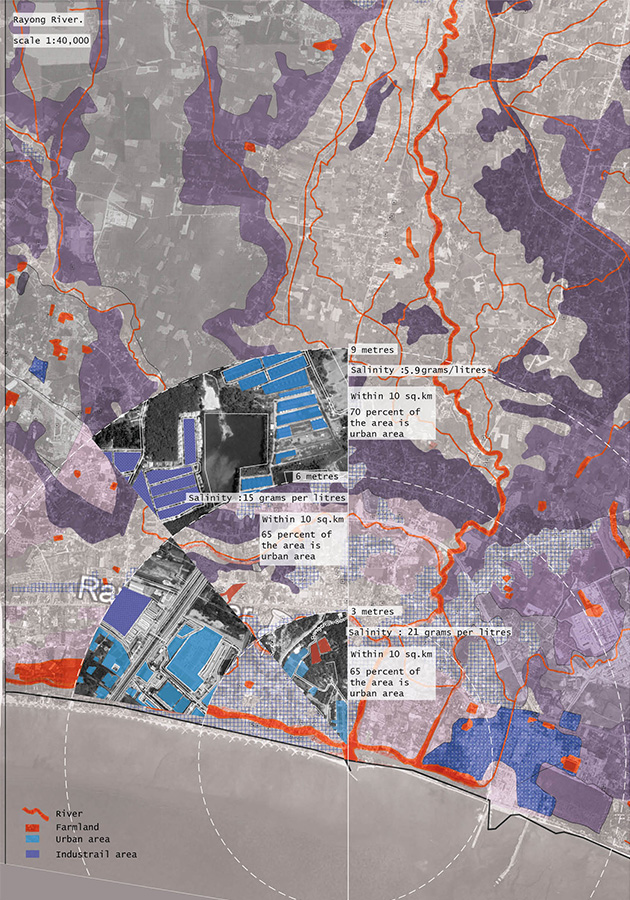
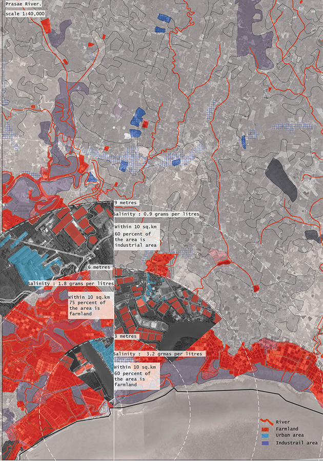
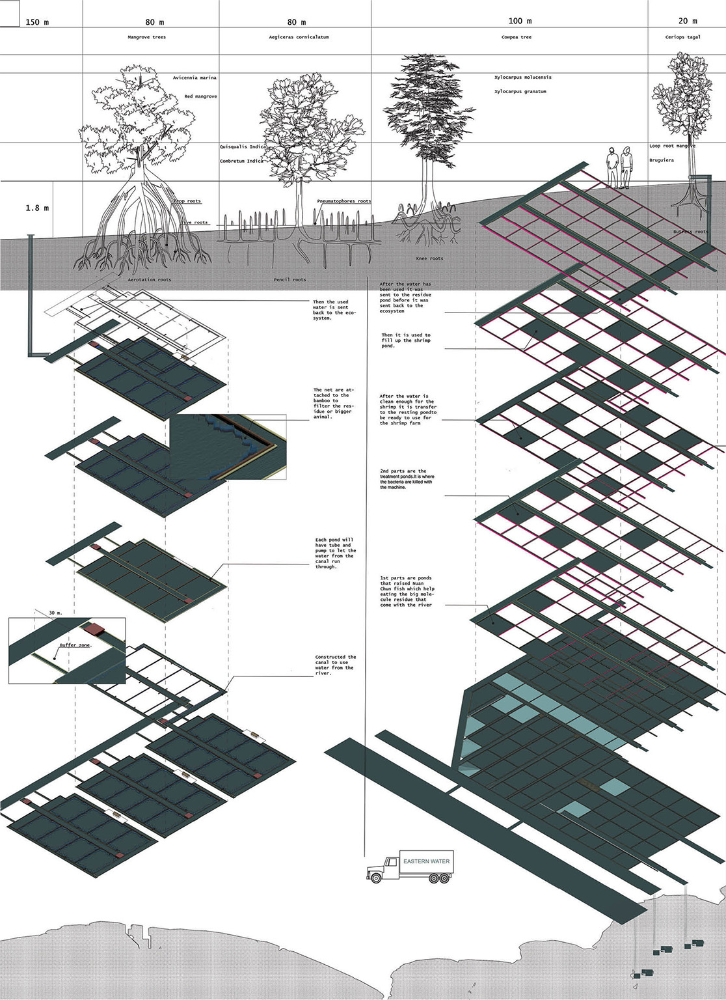
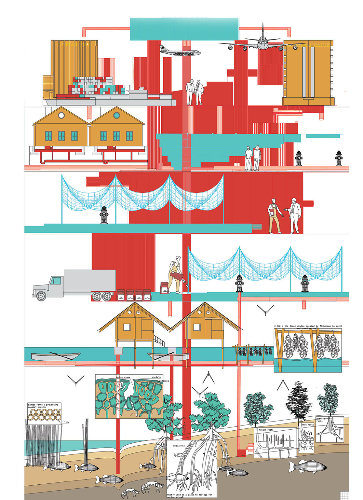

Ideate
During the ideation phase, I sketched out various design ideas, such as water circulation within the house, incorporating living walls, modular house planning, and well pumping.

Rebranding water
Project objective: Raise awareness and provide assistance to local farmers who may face the risk of losing their livelihoods due to land-related challenges in the future.
Role and Responsibilities:
Process overview
Emphathize
During the research phase, I divided the study into two parts: site analysis and social analysis.
Rayong River
Prasae River
Rayong, a province in Thailand, has many industries and farms located near two main rivers, Rayong and Prasae. Most shrimp farms are situated along the Prasae River since the water is better for shrimp farming. This includes farms owned by CP. However, to increase production, CP needs to get more land."
Tool diagram comparison
In macro farms, they use advanced technology for water filtration before and after use. In micro farms, natural filtration through nets and mangrove roots is used, with no pre-filtration before release.
Water hierarchy diagram
This diagram illustrates the Water Social Hierarchy impacting water flow in Prasae River. CP Farm, situated at the river's mouth, receives water first, followed by other farms, creating a hierarchy. CP is supported by external companies, including a freshwater supplier, while local farmers rely on self-sourced water, often using mangroves for filtration.
Define
Pain Points:
Ideate
During the ideation phase, I sketched out various design ideas, such as water circulation within the house, incorporating living walls, modular house planning, and well pumping.
Prototype
I have mapped the water bodies and conservation areas in Rayong. For shrimp farming, a specific level of salinity is required, which narrows our options to these four potential areas
Site selection : I opted for the Rayong River as it's closely linked to the community and conveniently situated near Mabtaput Port. During site analysis, I observed nearby assets like the mangrove conservation area and Prachedi Glangnu public park, which are popular gathering spots. Consequently, I planned to incorporate these spaces into our community while preserving the mangroves
Final
Vertical farming & Co-owning system: This approach maximizes space while supporting a water recycling system. The arrangement of ponds is based on each animal's water freshness needs, with fish at the core, shrimp in the middle, and crab and sea shell on the outer ring. This design promotes water reuse from the core to the outer ponds. On the right, the co-owning system is illustrated, which not only increases income but also reduces water consumption. Working together conserves water compared to individual farming.
Mangrove filtration: We've created a pipe shelter for mangrove filtration using local materials. This shelter serves as storage for farmer tools and a chill-out area for visitors. Its design mimics mangrove structures and can be connected to the pump system to utilize greywater for cooling.

Port and Data learning center: All data from supermarkets where our product is distributed will be sent back to the learning center. This allows farmers to receive performance feedback for continuous self-improvement

Expected impacts: These communities offer local farmers a chance to break free from hierarchical systems designed to benefit the powerful. To grow, they must seek partnerships, which could be with supermarkets or organizations like WWF, known for their mangrove habitat expansion project by 2030. A partnership with WWF could not only expand our Rayong community but also benefit mangrove ecosystems across Thailand. This community showcases the symbiotic relationship between sustainable seafood production, water ecology, and mangrove ecosystems, proving they can coexist harmoniously and support one another.